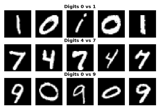
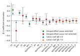
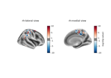

DesparsifiedLasso#
- class hidimstat.DesparsifiedLasso(estimator=None, centered=True, dof_ajdustement=False, model_x=None, preconfigure_model_x_path=True, alpha_max_fraction=0.01, random_state=None, save_model_x=False, tolerance_reid=0.0001, noise_method='AR', order=1, stationary=True, confidence=0.95, distribution='norm', epsilon_pvalue=1e-14, test='chi2', covariance=None, n_jobs=1, memory=None, verbose=0)[source]#
Bases:
BaseVariableImportanceDesparsified Lasso Estimator (also known as Debiased Lasso)
Statistical inference in high-dimensional regression using the desparsified Lasso. Provides debiased coefficient estimates, confidence intervals and p-values. Algorithm based on Algorithm 1 of d-Lasso and d-MTLasso in Chevalier[1].
- Parameters:
- estimatorLassoCV or MultiTaskLassoCV instance, default=None
Initial model for selecting relevant features. Must implement fit and predict. For single task use LassoCV, for multi-task use MultiTaskLassoCV. Set to LassoCV() if None is passed.
- model_xLasso or MultiTaskLasso instance, default=None
Base model for nodewise regressions. Set to Lasso() if None is passed.
- centeredbool, default=True
Whether to center X and y before fitting.
- dof_ajdustementbool, default=False
Whether to apply degrees of freedom adjustment for small samples.
- preconfigure_model_x_path: bool, default=True
Whether to preconfigure model_x with n_jobs and random_state.
- alpha_max_fractionfloat, default=0.01
Only used if preconfigure_model_x_path is True. Fraction of maximum alpha to use when alphas=None.
- random_stateint or RandomState, default=None
Controls randomization.
- save_model_xbool, default=False
Whether to save fitted nodewise regression models.
- tolerance_reidfloat, default=1e-4
Convergence tolerance for noise estimation.
- noise_method{‘AR’, ‘median’}, default=’AR’
Method for noise covariance estimation: - ‘AR’: Autoregressive model - ‘median’: Median correlation
- orderint, default=1
Order of AR model if noise_method=’AR’.
- stationarybool, default=True
Whether to assume stationary noise.
- confidencefloat, default=0.95
Confidence level for intervals.
- distributionstr, default=’norm’
Distribution for p-values, only ‘norm’ supported.
- epsilon_pvaluefloat, default=1e-14
Small constant to avoid numerical issues.
- test{‘chi2’, ‘F’}, default=’chi2’
Test statistic for p-values: - ‘chi2’: Chi-squared test (large samples) - ‘F’: F-test (small samples)
- covariancendarray or None, default=None
Pre-specified noise covariance matrix.
- n_jobsint, default=1
Number of parallel jobs.
- memorystr or Memory, default=None
Cache for intermediate results.
- verboseint, default=0
Verbosity level.
- Attributes:
- importances_ndarray of shape (n_features)
Debiased coefficient estimates.
- pvalues_ndarray of shape (n_features)
Two-sided p-values.
- pvalues_corr_ndarray of shape (n_features)
Multiple testing corrected p-values.
- sigma_hat_float or ndarray of shape (n_task, n_task)
Estimated noise level.
- precision_diagonal_ndarray of shape (n_features)
Diagonal entries of precision matrix.
- confidence_bound_min_ndarray of shape (n_features)
Lower confidence bounds.
- confidence_bound_max_ndarray of shape (n_features)
Upper confidence bounds.
- __init__(estimator=None, centered=True, dof_ajdustement=False, model_x=None, preconfigure_model_x_path=True, alpha_max_fraction=0.01, random_state=None, save_model_x=False, tolerance_reid=0.0001, noise_method='AR', order=1, stationary=True, confidence=0.95, distribution='norm', epsilon_pvalue=1e-14, test='chi2', covariance=None, n_jobs=1, memory=None, verbose=0)[source]#
- fit(X, y)[source]#
Fit the Desparsified Lasso model.
This method fits the Desparsified Lasso model to provide debiased coefficient estimates and statistical inference for high-dimensional regression.
- Parameters:
- Xarray-like of shape (n_samples, n_features)
Training data matrix.
- yarray-like of shape (n_samples,) or (n_samples, n_task)
Target values. For single task, y should be 1D. For multi-task, y should be 2D with shape (n_samples, n_task).
- Returns:
- selfobject
Returns the instance with fitted attributes: - importances_ : Desparsified coefficient estimates - sigma_hat_ : Estimated noise level - precision_diagonal_ : Diagonal of precision matrix - clf_ : Fitted nodewise regression models (if save_model_x=True)
Notes
The fitting process: 1. Centers X and y if self.centered=True 2. Fits initial Lasso using cross-validation 3. Estimates noise variance using Reid method 4. Computes nodewise Lasso regressions in parallel 5. Calculates debiased coefficients and precision matrix
- importance(X=None, y=None)[source]#
Compute desparsified lasso estimates, confidence intervals and p-values.
Uses fitted model to calculate debiased coefficients along with confidence intervals and p-values. For single task regression, provides confidence intervals based on Gaussian approximation. For multi-task case, computes chi-squared or F test p-values.
- Parameters:
- Xarray-like of shape (n_samples, n_features)
Input data matrix.
- yarray-like of shape (n_samples,) or (n_samples, n_task)
Target values. For single task, y should be 1D or (n_samples, 1). For multi-task, y should be 2D with shape (n_samples, n_task).
- Returns:
- importances_ndarray of shape (n_features,) or (n_features, n_task)
Desparsified lasso coefficient estimates.
Notes
Updates several instance attributes: - importances_: Desparsified coefficient estimates - pvalues_: Two-sided p-values - pvalues_corr_: Multiple testing corrected p-values - confidence_bound_min_: Lower confidence bounds (single task only) - confidence_bound_max_: Upper confidence bounds (single task only)
For multi-task case, p-values are based on chi-squared or F tests, configured by the test parameter (‘chi2’ or ‘F’).
- fit_importance(X, y)[source]#
Fit and compute variable importance in one step.
- Parameters:
- Xarray-like of shape (n_samples, n_features)
Training data matrix.
- yarray-like of shape (n_samples,) or (n_samples, n_task)
Target values. For single task, y should be 1D or (n_samples, 1). For multi-task, y should be (n_samples, n_task).
- Returns:
- importances_ndarray of shape (n_features,) or (n_features, n_task)
Desparsified lasso coefficient estimates.
- fdr_selection(fdr, fdr_control='bhq', reshaping_function=None, two_tailed_test=True)[source]#
Overrides the signature to set two_tailed_test=True by default.
- fwer_selection(fwer, procedure='bonferroni', n_tests=None, two_tailed_test=False)[source]#
Performs feature selection based on Family-Wise Error Rate (FWER) control.
- Parameters:
- fwerfloat
The target family-wise error rate level (between 0 and 1)
- procedure{‘bonferroni’}, default=’bonferroni’
The FWER control method to use: - ‘bonferroni’: Bonferroni correction
- n_testsint or None, default=None
Factor for multiple testing correction. If None, uses the number of clusters or the number of features in this order.
- two_tailed_testbool, default=False
If True, uses the sign of the importance scores to indicate whether the selected features have positive or negative effects.
- Returns:
- selectedndarray of int
Integer array indicating the selected features. 1 indicates selected features with positive effects, -1 indicates selected features with negative effects, 0 indicates non-selected features.
- get_metadata_routing()[source]#
Get metadata routing of this object.
Please check User Guide on how the routing mechanism works.
- Returns:
- routingMetadataRequest
A
MetadataRequestencapsulating routing information.
- get_params(deep=True)[source]#
Get parameters for this estimator.
- Parameters:
- deepbool, default=True
If True, will return the parameters for this estimator and contained subobjects that are estimators.
- Returns:
- paramsdict
Parameter names mapped to their values.
- importance_selection(k_best=None, percentile=None, threshold_max=None, threshold_min=None)[source]#
Selects features based on variable importance.
- Parameters:
- k_bestint, default=None
Selects the top k features based on importance scores.
- percentilefloat, default=None
Selects features based on a specified percentile of importance scores.
- threshold_maxfloat, default=None
Selects features with importance scores below the specified maximum threshold.
- threshold_minfloat, default=None
Selects features with importance scores above the specified minimum threshold.
- Returns:
- selectionarray-like of shape (n_features,)
Binary array indicating the selected features.
- plot_importance(ax=None, ascending=False, feature_names=None, **seaborn_barplot_kwargs)[source]#
Plot feature importances as a horizontal bar plot.
- Parameters:
- axmatplotlib.axes.Axes or None, (default=None)
Axes object to draw the plot onto, otherwise uses the current Axes.
- ascending: bool, default=False
Whether to sort features by ascending importance.
- **seaborn_barplot_kwargsadditional keyword arguments
Additional arguments passed to seaborn.barplot. https://seaborn.pydata.org/generated/seaborn.barplot.html
- Returns:
- axmatplotlib.axes.Axes
The Axes object with the plot.
- pvalue_selection(k_lowest=None, percentile=None, threshold_max=0.05, threshold_min=None, alternative_hypothesis=False)[source]#
Selects features based on p-values.
- Parameters:
- k_lowestint, default=None
Selects the k features with lowest p-values.
- percentilefloat, default=None
Selects features based on a specified percentile of p-values.
- threshold_maxfloat, default=0.05
Selects features with p-values below the specified maximum threshold (0 to 1).
- threshold_minfloat, default=None
Selects features with p-values above the specified minimum threshold (0 to 1).
- alternative_hypothesisbool, default=False
If True, selects based on 1-pvalues instead of p-values.
- Returns:
- selectionarray-like of shape (n_features,)
Binary array indicating the selected features (True for selected).
- set_params(**params)[source]#
Set the parameters of this estimator.
The method works on simple estimators as well as on nested objects (such as
Pipeline). The latter have parameters of the form<component>__<parameter>so that it’s possible to update each component of a nested object.- Parameters:
- **paramsdict
Estimator parameters.
- Returns:
- selfestimator instance
Estimator instance.
Examples using hidimstat.DesparsifiedLasso#

Pixel-wise inference on digit classification

Coefficient estimates with Desparsified Lasso on the diabetes dataset

Source localization of somatosensory MEG data